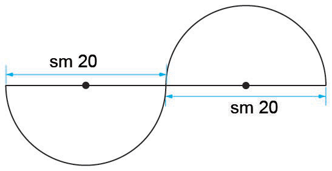
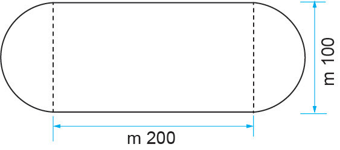

Zoezi la kwanza
Jibu maswali yafuatayo.
Tumia π = isipokuwa palipoelekezwa vinginevyo:
1.
Kwa kila kipenyo ulichopewa, tafuta mzingo wa duara:
(a) sm 98
(b) sm 56
(c) dm 9.1
(d) dm 7
2.
Tafuta kipenyo cha kila duara kwa kutumia mzingo uliopewa:
(a) m 44
(b) m 132
(c) mm 220
3.
Kwa kila mzingo uliopewa, tafuta nusu kipenyo cha duara:
(a) dm 968
(b) dm 616
4.
Tafuta mzingo wa robotatu duara lenye nusu kipenyo cha sm 35.
5.
Tafuta mzingo wa kila duara lenye vipimo vifuatavyo:
(a) kipenyo = sm 80.5
(b) nusu kipenyo = mm 210
6.
Kipenyo cha tairi la gari ni sm 63.Ikiwa tairi hilo litazunguka umbali wa meta 63.36, je litazunguka mizunguko mingapi?
7.
Bwana Baraka alijenga kisima chenye kipenyo cha meta 7.Katika hatua za awali za ujenzi, nguzo zilizoachana kwa meta 2.2 zilitumika ili kuimarisha kisima hicho.Je, zilitumika nguzo ngapi kujenga kisima hicho?
8.
Tafuta mzingo wa umbo lifuatalo.
Tumia π = 3.14.

sm 20sm 20
9.
Tafuta mzingo wa kiwanja kifuatacho.
Tumia π = 3.14.

10.
Tafuta mzingo wa kila umbo la nusu duara kwa kutumia vipenyo vifuatavyo:
(a) m 21
(b) sm 84
11.
Tafuta mzingo wa umbo la robo duara lenye nusu kipenyo cha sm 49.
12.
Mzingo wa kitako cha bakuli ni mm 110.Tafuta kipenyo cha kitako cha bakuli hilo.